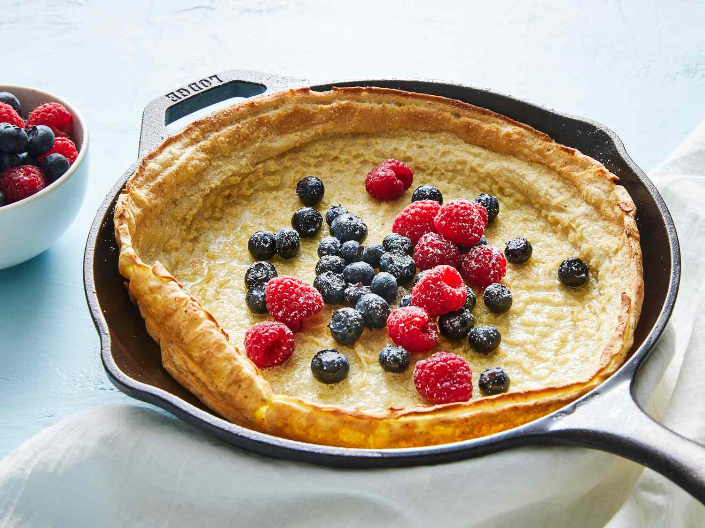

Dutch Baby Pancakes

Description
This Dutch baby recipe is from my great-grandmother. Warm Dutch babies are great on a cold morning — they're light, yet very filling. I love to eat them. Serve with warm maple syrup and lemon wedges.
Ingredients
- 2 eggs
- Milk
- All-purpose flour
- Butter
- Sugar
- Seasonings : nutmeg and a pinch of salt
Steps
- Place a skillet into the oven while it preheats. .
- Make the batter.
- Pour the batter into the hot, buttered skillet.
- Bake until it’s lightly puffed, then dust with powdered sugar.
Homepage